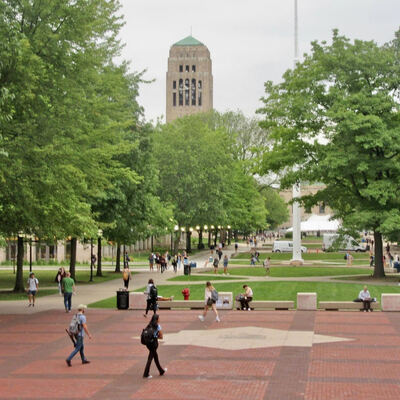
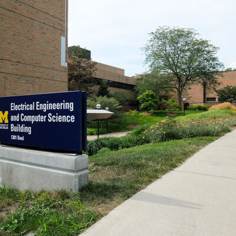
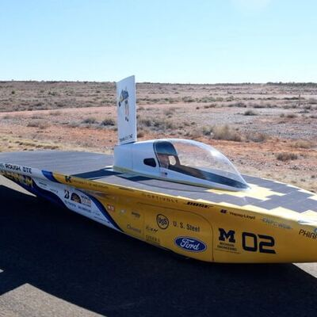

University of Michigan — B.S. Computer Science
I build the software that keeps power grids, data centers, and other critical infrastructure standing up under stress.
About
I'm a Computer Science student at the University of Michigan, minoring in Data Science and Energy Science & Policy. Most of my work sits at the intersection of distributed systems and physical infrastructure — modeling how power grids respond to failure, and building the control systems that keep them stable.
Right now that means simulating how large AI training workloads strain the grid, and helping design formally verified controllers that keep data centers compliant during voltage faults. Outside of research, I mentor students through WISE Residence Program and GEECS (Girls in Electrical Engineering and Computer Science), and contribute to open-source infrastructure tooling.
Outside of work, I'm usually deep in a mystery novel, hunting down the best coffee shop in whatever city I'm in, or getting dragged on a walk by my dog.
Research
Data center power demand is rising fast and unevenly — a 2024 Virginia grid fault tripped 1,500 MW of data center load at once, most of it offline for hours. Grid codes now require riding through voltage sags instead of disconnecting, but those codes are informal and hard to formalize, and hand-tuned controllers offer no compliance guarantee. My research tackles this from two angles: synthesizing formally verified ride-through controllers, and modeling how synchronized GPU workloads strain distribution grids that weren't built for them.
Synthesizing Voltage Ride-Through Controllers for Data Centers
Synthesizing Voltage Ride-Through Controllers for Data Centers
Part of the Digital Transformation of Industrial Infrastructure (ACM EIGDX) group. We built SolVRT, a formal methods system for synthesizing voltage ride-through (VRT) controllers that keep data centers grid-code compliant during faults.
- Ran controller experiments in the ANDES power system simulator across multiple grid topologies
- Injected faults for every low-voltage ride-through band under Texas ERCOT grid code
- Analyzed controller performance and produced the result visualizations used in the paper
- Presented this work as a poster at multiple research symposiums
Grid Stability Under AI Workloads
Grid Stability Under AI Workloads
Modeling IEEE distribution bus systems to understand how large-scale AI training workloads stress power grid stability, and simulating what happens when multiple data centers draw load at once.
- Built an interactive simulation platform to visualize voltage behavior, load allocation, and bus topology changes
- Implementing voltage stabilization strategies — feedback optimization, droop control, and reactive power tuning — to hold the grid steady during load surges
- Presented this work as a poster at multiple research symposiums
Projects
Primary/Backup Replication
Built a replicated service using a primary/backup architecture to keep state consistent across server failures.
Paxos Consensus
Implemented the Paxos consensus protocol to let a group of servers agree on a sequence of operations despite failures.
Sharded Key-Value Store
Built a distributed key-value store made of multiple Paxos groups, each responsible for its own subset of keys, coordinated by a "ShardMaster" group that manages how keys are assigned across shards.
Cloudflare AI Chatbot
An AI-powered chat application built on Cloudflare Workers AI with persistent memory. Runs Llama 3.3 (70B Instruct) as the underlying LLM, uses a Durable Object per session to coordinate conversation state, and persists chat history so context carries across messages instead of resetting each turn.
Cryptographic Attacks
Implemented a length-extension attack against a vulnerable hash-based authentication scheme, generated MD5 hash collisions to produce two programs with identical hashes but different behavior, built a padding-oracle attack against CBC-mode encryption to decrypt ciphertext without the key, and forged RSA signatures by exploiting lenient PKCS#1 v1.5 padding validation.
CSRF & XSS
Built and defended against cross-site request forgery and cross-site scripting attacks in a realistic web application setting.
Networking & Packet Analysis
Explored network-layer security as part of the course's networking unit. Wrote Python socket scripts to connect to remote servers, handle communication over TCP/IP, and automate protocol interactions. Used Wireshark to capture and inspect live traffic, diagnosing protocol behaviors and tracing packet integrity issues back to their root cause. Evaluated network services for vulnerabilities and reasoned about threat models in a local virtual lab environment.
AppSec Project
Identified and exploited application-layer vulnerabilities in a target web application, then implemented fixes to harden it against the same attacks — including input validation, safer session handling, and tightening access control logic.
Experience
Open Source Contributor, Numaflow (Intuit)
Contributing to Numaflow, a Kubernetes-native event processing platform, focused on improving system stability and performance. Analyze open issues and ship fixes in Rust within a production-grade distributed systems codebase.
View the project →Software Engineer Intern, SiteNotes
Built features for a cross-platform mobile app (React Native, Firebase) supporting 1,000+ civil engineers in the field, and integrated Gemini for AI-assisted note-taking on job sites. Worked across the stack — from Firebase data models and offline sync to the React Native UI.
Strategy Team, Michigan Solar Car Project Team
Built optimization strategies and race-day data analysis for a 100+ member engineering team designing solar-powered race vehicles. Modeled energy consumption and weather/route variables to plan speed strategy for competition.
Software Engineer Intern, Alameda County IT Department
Owned a data migration project end to end — moved records from a legacy DB2 system to SQL Server and built a searchable interface for archived case files. Wrote migration and validation scripts to ensure data integrity across the transfer.